基于SpringCloud分布式架构¶
为什么要使用分布式架构¶
- Spring Cloud 专注于提供良好的开箱即用经验的典型用例和可扩展性机制覆盖
- 分布式/版本化配置
- 服务注册和发现
- 路由
- Service-to-Service 调用
- 负载均衡
- 断路器
- 分布式消息传递
这是分布式的优点，这样看起来可能比较抽象，举个例子来说，对于单体服务来说，如果我想更新订单中的某个功能，我是不是需要重启整个服务。
这个时候就会导致整个项目都处于不可用状态，或者在处理订单的时候由于程序代码写的有问题，导致死锁了，这个时候也会导致整个服务处于宕机专改，容错率很差。
但是分布式不同，如上图所示，订单服务、售后服务、用户服务都是独立的服务，如果需要更新订单服务或者订单服务发生死锁，受影响的只会是订单服务，售后服务与用户服务还是可以正常工作的，这就是分布式相对单体来说最大的优势之一。
分布式基础组件¶
Spring Cloud Config：配置管理工具包，让你可以把配置放到远程服务器，集中化管理集群配置，目前支持本地存储、Git 以及 Subversion。
Spring Cloud Bus：事件、消息总线，用于在集群（例如，配置变化事件）中传播状态变化，可与 Spring Cloud Config 联合实现热部署。
Eureka：云端服务发现，一个基于 REST 的服务，用于定位服务，以实现云端中间层服务发现和故障转移。
Hystrix：熔断器，容错管理工具，旨在通过熔断机制控制服务和第三方库的节点,从而对延迟和故障提供更强大的容错能力。
Zuul：Zuul 是在云平台上提供动态路由,监控,弹性,安全等边缘服务的框架。Zuul 相当于是设备和 Netflix 流应用的 Web 网站后端所有请求的前门。
Archaius：配置管理 API，包含一系列配置管理 API，提供动态类型化属性、线程安全配置操作、轮询框架、回调机制等功能。
Consul：封装了 Consul 操作，Consul 是一个服务发现与配置工具，与 Docker 容器可以无缝集成。
Spring Cloud for Cloud Foundry：通过 Oauth2 协议绑定服务到 CloudFoundry，CloudFoundry 是 VMware 推出的开源 PaaS 云平台。
Spring Cloud Sleuth：日志收集工具包，封装了 Dapper 和 log-based 追踪以及 Zipkin 和 HTrace 操作，为 Spring Cloud 应用实现了一种分布式追踪解决方案。
Spring Cloud Data Flow：大数据操作工具，作为 Spring XD 的替代产品，它是一个混合计算模型，结合了流数据与批量数据的处理方式。
Spring Cloud Security：基于 Spring Security 的安全工具包，为你的应用程序添加安全控制。
Spring Cloud Zookeeper：操作 Zookeeper 的工具包，用于使用 Zookeeper 方式的服务发现和配置管理。
Spring Cloud Stream：数据流操作开发包，封装了与 Redis、Rabbit、Kafka 等发送接收消息。
Spring Cloud CLI：基于 Spring Boot CLI，可以让你以命令行方式快速建立云组件。
Ribbon：提供云端负载均衡，有多种负载均衡策略可供选择，可配合服务发现和断路器使用。
Turbine：Turbine 是聚合服务器发送事件流数据的一个工具，用来监控集群下 Hystrix 的 Metrics 情况。
Feign：Feign 是一种声明式、模板化的 HTTP 客户端。
Spring Cloud Task：提供云端计划任务管理、任务调度。
Spring Cloud Connectors：便于云端应用程序在各种 PaaS 平台连接到后端，如：数据库和消息代理服务。
Spring Cloud Cluster：提供 Leadership 选举，如：Zookeeper，Redis，Hazelcast，Consul 等常见状态模式的抽象和实现。
Spring Cloud Starters：Spring Boot 式的启动项目，为 Spring Cloud 提供开箱即用的依赖管理。
我们常用的组件：
- Spring Cloud Config
- Spring Cloud Bus
- Hystrix
- Eureka
- Zuul
- Ribbon
- Feign
Eureka¶
Eureka 属于 Spring Cloud Netflix 下的组件之一，主要负责服务的注册与发现，何为注册与发现？
在刚刚我们分析的分布式中存在这一个问题，那就是订单服务与用户服务被独立了，那么他们怎么进行通信呢？比如在订单服务中获取用户的基础信息，这个时候我们需要怎么办？
如果按照上面的架构图，直接去数据库获取就可以了，因为服务虽然独立了，但是数据库还是共享的，所以直接查询数据库就能得到结果，如果我们将数据库也拆分了呢？这个时候我们该怎么办呢？
有人想到了，服务调用，服务调用是不是需要 IP 和端口才可以，那问题来了，对于订单服务来说，我怎么知道用户服务的 IP 和端口呢？在订单服务中写死吗？如果用户服务的端口发生改变了呢？
这个时候 Eureka 就出来了，他就是为了解决服务的通信问题，每个服务都可以将自己的信息注册到 Eureka 中，比如 IP、端口、服务名等信息，这个时候如果订单服务想要获取用户服务的信息，只需要去 Eureka 中获取即可。
请看下图：
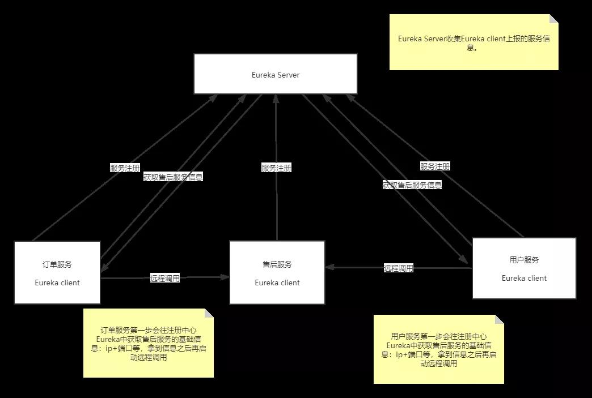
这就是 Eureka 的主要功能，也是我们使用中的最值得注意的，他让服务之间的通信变得更加的简单灵活。
Spring Cloud Config¶
Spring Cloud Config 为分布式系统中的外部配置提供服务器和客户端支持。使用 Config Server，您可以在所有环境中管理应用程序的外部属性。
客户端和服务器上的概念映射与 Spring Environment 和 PropertySource 抽象相同，因此它们与 Spring 应用程序非常契合，但可以与任何以任何语言运行的应用程序一起使用。
随着应用程序通过从开发人员到测试和生产的部署流程，您可以管理这些环境之间的配置，并确定应用程序具有迁移时需要运行的一切。
服务器存储后端的默认实现使用 Git，因此它轻松支持标签版本的配置环境，以及可以访问用于管理内容的各种工具。可以轻松添加替代实现，并使用 Spring 配置将其插入。
简单点来说集中来管理每个服务的配置文件，将配置文件与服务分离，这么多的目的是什么？
举个简单的栗子，我们配置文件中肯定会存在数据库的连接信息，Redis 的连接信息，我们的环境是多样的，有开发环境、测试环境、预发布环境、生产环境。
每个环境对应的连接信息肯定是不相同的，难道每次发布的时候都要去修改一下服务中的配置文件？
我能不能将这些变动较大的配置集中管理，不同环境的管理者分别对他们进行修改，就不需要再服务中做改动了，Config 就做到了。
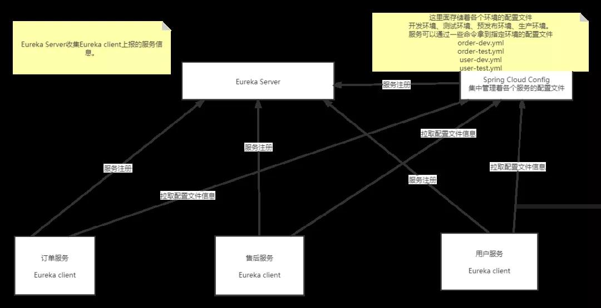
这就是 Config 的大致架构，所有的配置文件都集中交给 Config 管理，拿 Config 怎么管理这些配置文件呢？
你可以将每个环境的配置文件存放再一个位置，比如 Lgitlab、SVN、本地等等，Config 会根据根据你设置的位置读取配置文件进行管理，然后其他服务启动的时候直接到 Config 配置中心获取对应的配置文件即可。
这样开发人员只需要关注 -dev 的配置文件，测试人员只需要关注 -test 的配置文件，完全和服务解耦，你值得拥有。
Netflix Zuul（网关）¶
路由在微服务体系结构的一个组成部分。例如，/可以映射到您的 Web 应用程序，/api/users 映射到用户服务，并将 /api/shop 映射到商店服务。Zuul 是 Netflix 的基于 JVM 的路由器和服务器端负载均衡器。
Netflix 使用 Zuul 进行以下操作：
- 认证 -洞察
- 压力测试
- 金丝雀测试
- 动态路由
- 服务迁移
- 负载脱落
- 安全
- 静态响应处理
- 主动/主动流量管理
我们在日常开发过程中并不会使用那么多，基本上就是认证、动态路由、安全等等，我画了一张关于网关的架构图，请看：
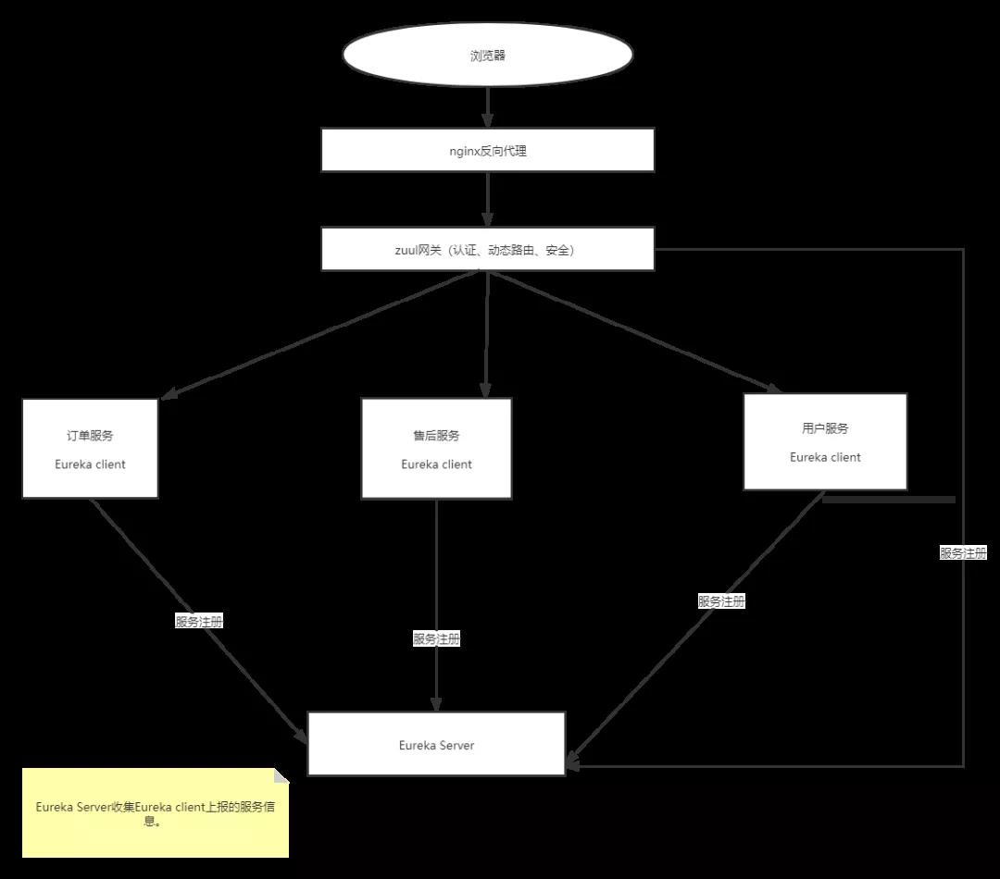
注意：Nginx 只能为我们做反向代理，不能做到权限认证，网关不但可以做到代理，也能做到权限认证、甚至还能做限流，所以我们要做分布式项目，少了他可不行。
Spring Cloud Bus¶
application.yml
spring:
datasource:
username: root
password: 123456
url: jdbc:mysql://localhost:3306/test
driver-class-name: com.mysql.cj.jdbc.Driver
比如上面这行配置大家都应该很熟悉，这是数据库的连接信息，如果它发生改变了怎么办呢？
我们都知道，服务启动的时候会去 Config 配置中心拉取配置信息，但是启动完成之后修改了配置文件我们应该怎么办呢，重启服务器吗？
我们可以通过 Spring Cloud Bus 来解决这个问题，Spring Cloud Bus 将轻量级消息代理链接到分布式系统的节点。然后可以将其用于广播状态更改（例如，配置更改）或其他管理指令。
我们可以通过 Spring Cloud Bus 来解决这个问题，Spring Cloud Bus 将轻量级消息代理链接到分布式系统的节点。然后可以将其用于广播状态更改（例如，配置更改）或其他管理指令。
这个需要我们有一点的 MQ 基础，不管是 RabbitMQ 还是 Kafka，都可以。
Bus 的基本原理就是：配置文件发生改变时，Config 会发出一个 MQ，告诉服务，配置文件发生改变了，并且还发出了改变的哪些信息，这个时候服务只需要根据 MQ 的信息做实时修改即可。
这是一个很简单的原理，理解起来可能也不会怎么难，画个图来理解一下：
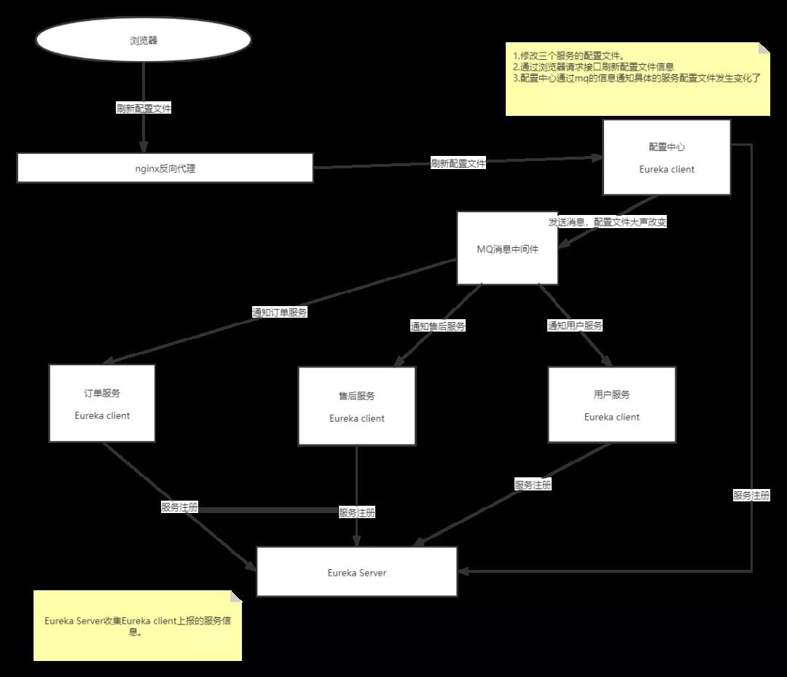
大致流程就是这样，核心就是通过 MQ 机制实现不重启服务也能做到配置文件的改动，这方便了运维工程师，不用每次修改配置文件的时候都要去重启一遍服务的烦恼。
Feign¶
Feign 是一个声明式的 Web 服务客户端。这使得 Web 服务客户端的写入更加方便 要使用 Feign 创建一个界面并对其进行注释。
它具有可插入注释支持，包括 Feign 注释和 JAX-RS 注释。Feign 还支持可插拔编码器和解码器。
Spring Cloud 增加了对 Spring MVC 注释的支持，并使用 Spring Web 中默认使用的 HttpMessageConverters。
Spring Cloud 集成 Ribbon 和 Eureka 以在使用 Feign 时提供负载均衡的 HTTP 客户端。
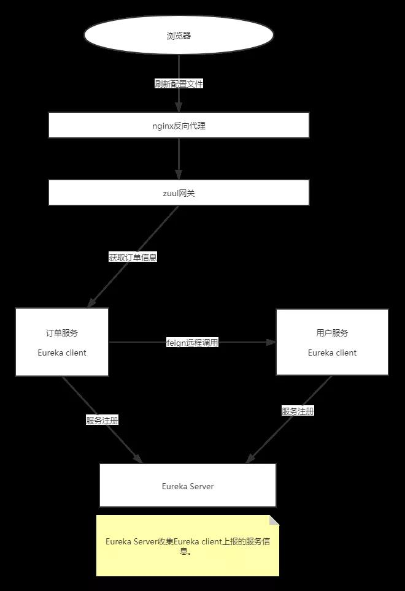
Feign 基于 Rest 风格，简单易懂，他的底层是对 HttpClient 进行了一层封装，使用十分方便。
Netflix Hystrix（熔断）¶
Hystrix 支持回退的概念：当电路断开或出现错误时执行的默认代码路径。要为给定的 @FeignClient 启用回退，请将 Fallback 属性设置为实现回退的类名。
我们可以改造一下刚刚的调用架构：
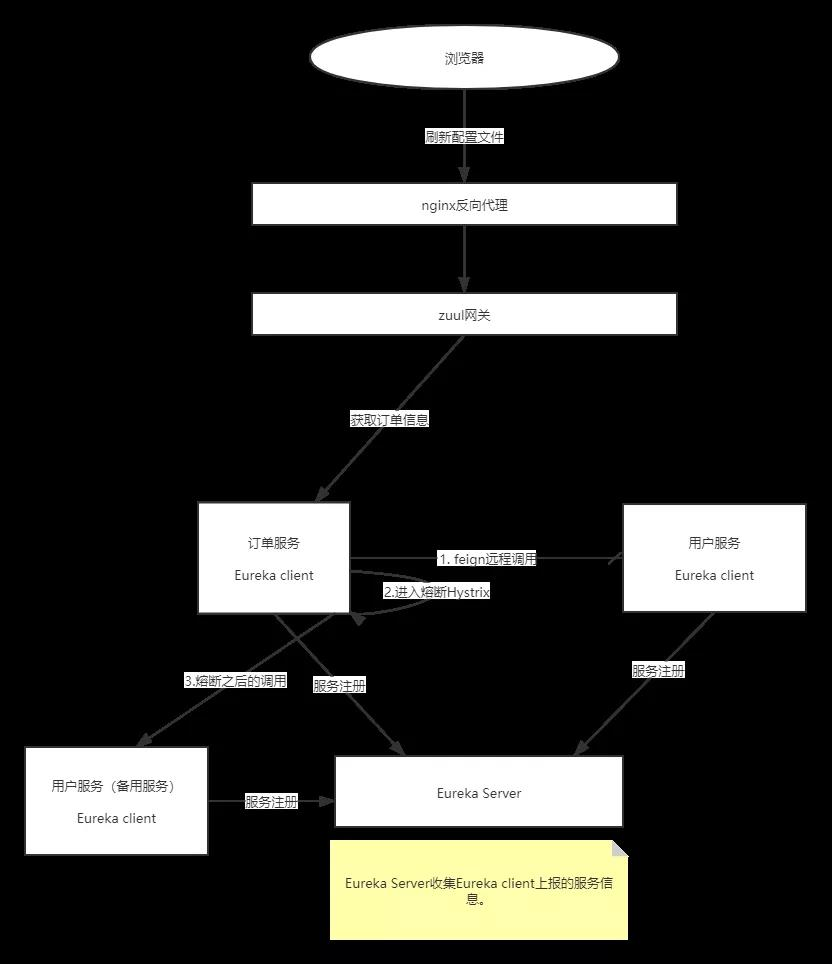
在这里我部署了一台备用服务器，当用户服务宕机了之后，订单服务进行远程调用的时候可以进入备用服务，这样就不会导致系统崩溃。
MQ（消息中间件）¶
我现在这里有一个需求，修改密码，修改密码需要发送短信验证码，发送短信在短信服务中，修改密码在用户服务中，这个时候就会出现服务调用。
而且我们知道，发送短信一般都是调用第三方的接口，那比如阿里的，既然牵扯到调用，那么就会存在很多不确定因素，比如网络问题。
假如，用户再点击发送短信验证码到时候用户服务调用短信服务，但是在短信服务中执行调用阿里的接口花费了很长的时间。
这个时候就会导致用户服务调短信服务超时，会返回给用户失败，但是，短信最后又发出去了，这种问题怎么解决呢？
我们可以通过消息中间件来实现，使用异步讲给用户的反馈和发送短信分离，只要用户点了发送短信，直接返回成功，然后再启动发送验证码，60 秒重发一下，就算发送失败，用户还可以选择重新发送。
MQ 不但可以解耦服务，它还可以用来削峰，提高系统的性能，是一个不错的选择。
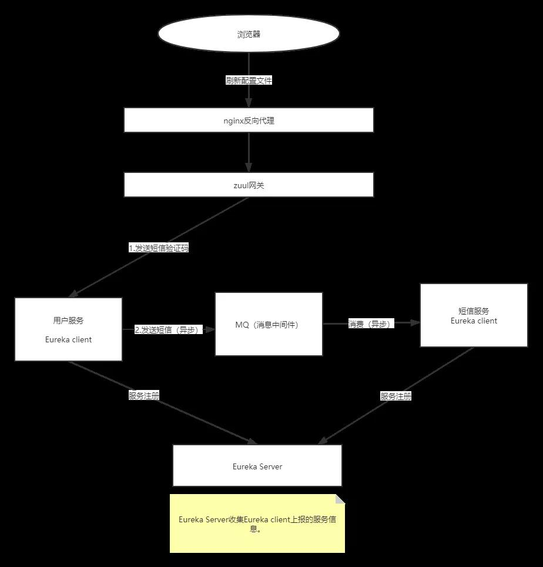
分布式事务¶
既然我们使用了分布式架构，那么有一点是我们必须要注意的，那就是事务问题。
如果一个服务的修改依赖另外一个服务的操作，这个时候如果操作不慎，就会导致可怕的后果。
举个例子，两个服务：钱包服务（用于充值提现）、交易钱包服务（用于交易），我现在想从钱包服务中转 1000 元到交易钱包服务中，我们应该如何保证他们数据的一致性呢？
我这里有两种方案，第一种是通过 MQ 来保证一致性，另外一种就是通过分布式事务来确保一致性。
MQ 确保一致性¶
- 生成一个订单表，记录着转入转出的状态。
- 向 MQ 发送一条确认消息。
- 开启本地事务，执行转出操操作，并且提交事务。
交易钱包服务：接收 MQ 的消息，进行转入操作（此操作需要 Ack 确认机制的支持）。
系统中会一直定时扫描订单中状态，没有成功的就做补偿机制或者重试机制，这个不是唯一要求。
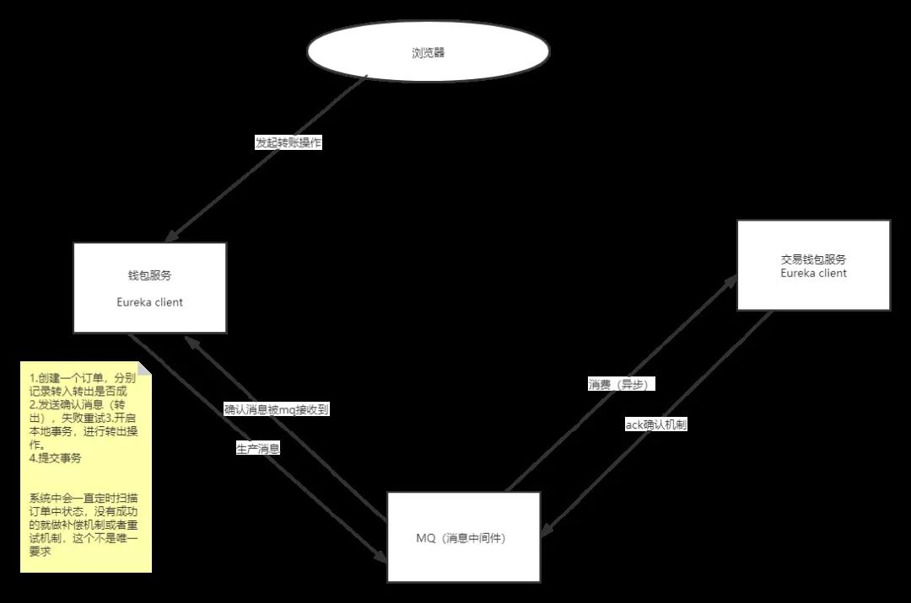
以上就是 MQ 确保分布式事务的大致思路，不是唯一，仅供参考。
Seata（分布式事务）¶
Seata 有三个基本组成部分：
- 事务协调器（TC）：维护全局事务和分支事务的状态，驱动全局提交或回滚。
- 事务管理器 TM：定义全局事务的范围：开始全局事务，提交或回滚全局事务。
- 资源管理器（RM）：管理分支事务正在处理的资源，与 TC 进行对话以注册分支事务并报告分支事务的状态，并驱动分支事务的提交或回滚。
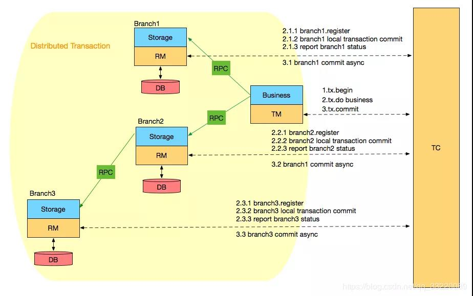
Seata 管理的分布式事务的典型生命周期：
- TM 要求 TC 开始一项新的全球交易。TC 生成代表全局事务的 XID。
- XID 通过微服务的调用链传播。
- RM 将本地事务注册为 XID 到 TC 的相应全局事务的分支。
- TM 要求 TC 提交或回滚 XID 的相应全局事务。
- TC 驱动 XID 对应的全局事务下的所有分支事务以完成分支提交或回滚。
完整的分布式架构¶
完整的分布式架构如下图：
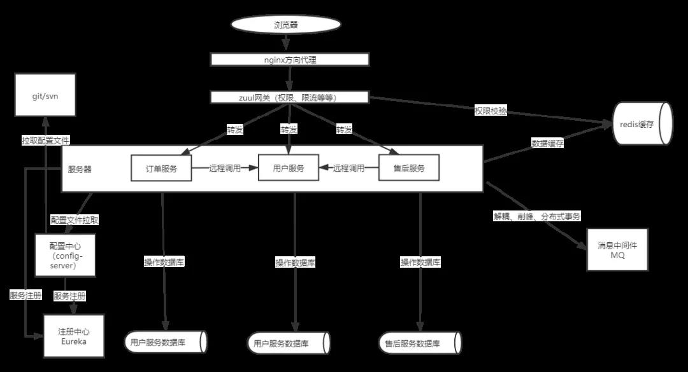
这就是一套分布式基本的架构，请求从浏览器发出，经过 Nginx 反向代理到 Zuul 网关。
网关经过权限校验、然后分别转发到对应的服务中，每个服务都有自己独立的数据库，如果需要跨库查询的时候就需要用到分布式的远程调用（Feign）。
虽然这里我将服务拆分了，但是有一点需要注意的是网关，网关承载着所有的请求，如果请求过大会发生什么呢？
服务宕机，所以一般情况下，网关都是集群部署，不止网关可以集群，其他的服务都可以做集群配置，比如：注册中心、Redis、MQ 等等都可以。
那我们将这个流程图再改良一下：
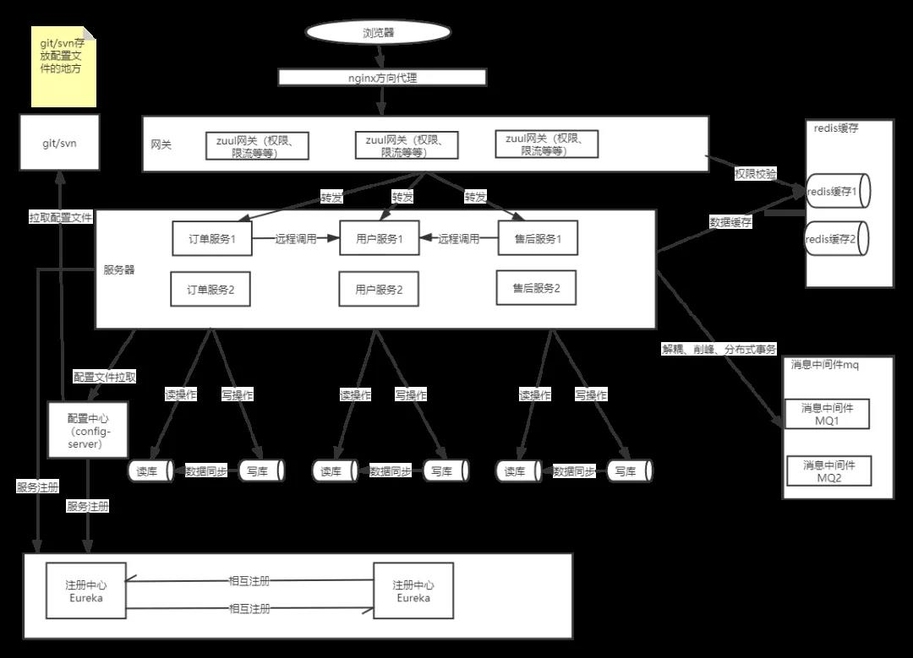
现在这套架构就是比较程数的一套了，不管是性能还是稳定能，都是杠杠的，技术选择性的会也开得差不多了，最后技术总监做了一个总结。
总结¶
单体服务与分布式服务区别¶
| 区别 | 传统单体架构 | 分布式服务架构 |
|---|---|---|
| 新功能开发 | 需要时间 | 容易开发和实现 |
| 部署 | 不经常且容易部署 | 经常发布，部署复杂 |
| 隔离性 | 故障影响范围大 | 故障影响范围小 |
| 架构设计 | 难度小 | 难度级数增大 |
| 系统性能 | 响应时间快，吞吐量小 | 响应时间慢，吞吐量大 |
| 系统运维 | 运维简单 | 运维复杂 |
| 新手上手 | 学习曲线大(业务逻辑) | 学习曲线大(构架逻辑) |
| 技术 | 技术单一且封闭 | 技术多样且开放 |
| 测试和查错 | 简单 | 复杂 |
| 系统扩展性 | 扩展性差 | 扩展性很好 |
| 系统管理 | 重点在于开放成本 | 重点在于服务治理和调度 |
什么时候使用分布式/集群？¶
总结如下几点：
- 单机无法支持的时候。
- 想要更好的隔离性（功能与功能）。
- 想要更好用户体验的时候。
- 想要更好的扩展性。
- 想要更快的响应，更搞得吞吐量。
使用分布式注意事项¶
虽然现在分布式技术已经十分成熟，但是里面的坑不是一点两点，比如：==如何保证分布式事务的一致性、如何保证服务调用的幂等性、如何保证消息的幂等性、如何设置熔断（服务的降级），如何保证服务的健壮性等等，==这些都是一直需要关注的问题，只有解决了这些问题，你的分布式架构才能真正的立于不败之地。
关于组件停更消息¶
目前注册中心 Eureka、网关 Zuul，Feign 都相继停更了，停更不代表不能使用，只是除了 Bug 可能不会主动修复，所以这个时候我们可能就需要选择另外的组件了。
注册中心可以使用 Consul、Nacos，Zookeeper，网关则可以通过 Gateway 替换，OpenFeign 替换 Fiegn。
所以也没必要听到组件停更的消息就担心 Cloud 会不会凉，放心，它至少最近几年是不会凉的。